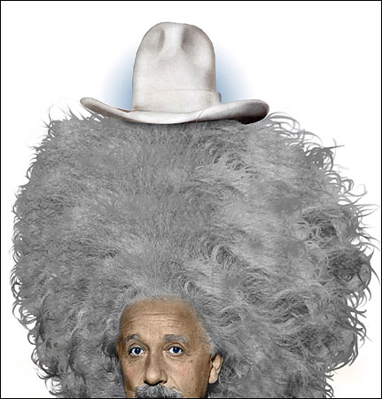

I am awake.The Buddha. And Walter White.
...the Haudenosaunee (Iroquois), whose insistence on personal liberty fascinated him. They were, he wrote, "all free by nature, and will not bear any domineering or lording over them." Adriaen van der Donck was a lawyer who in 1641 transplanted himself to the Hudson River Valley, then part of the Dutch colony of Nieuw Nederland. Quoted in Mann, C.C., 2005. 1491: New revelations of the Americas before Columbus. Alfred a Knopf Incorporated. Mann, Charles C.. 1491 (Second Edition) . Knopf Doubleday Publishing Group. Kindle Edition.
It takes very little to govern good people. Very little. And bad people can't be governed at all. No Country for Old Men by Cormac McCarthy.
"Many years later, as he faced the firing squad, Colonel Aureliano Buendia was to remember that distant afternoon when his father took him to discover ice."Gabriel Garcia Marquez. First line of One Hundred Years of Solitude.
He is sensitive and fierce, a poet and a warrior. James Webb. A Sense of Honor. Naval Institute Press. 1995
I am no Einstein. Einstein

Image by Lou Beach, New York Times.
Like resilience, self-organization is often sacrificed for purposes of short-term productivity and stability.
Productivity and stability are the usual excuses for turning creative human beings into mechanical
adjuncts to production processes. Or for narrowing the genetic variability of crop plants.
Or for establishing bureaucracies and theories of knowledge that treat people as if they were only numbers.
Self-organization produces heterogeneity and unpredictability. It is likely come up with whole new structures,
whole new ways of doing things. It requires freedom and experimentation, and a certain amount of disorder.
These conditions that encourage self-organization often can be scary for individuals and threatening to
power structures. As a consequence, education systems may restrict the creative powers of children
instead of stimulating those powers. Economic policies may lean toward supporting established, powerful
enterprises rather than upstart, new ones. And many governments prefer their people not to be too
self-organizing.
Meadows, Donella H. Thinking in Systems (pp. 79-80). Chelsea Green Publishing. Kindle Edition.
Anarchist: A person who rebels against any authority, established order, or ruling power.
Merriam-Webster online dictionary.